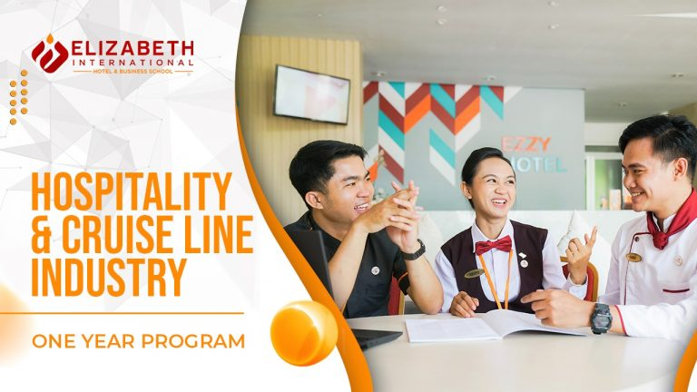
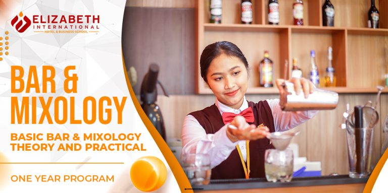
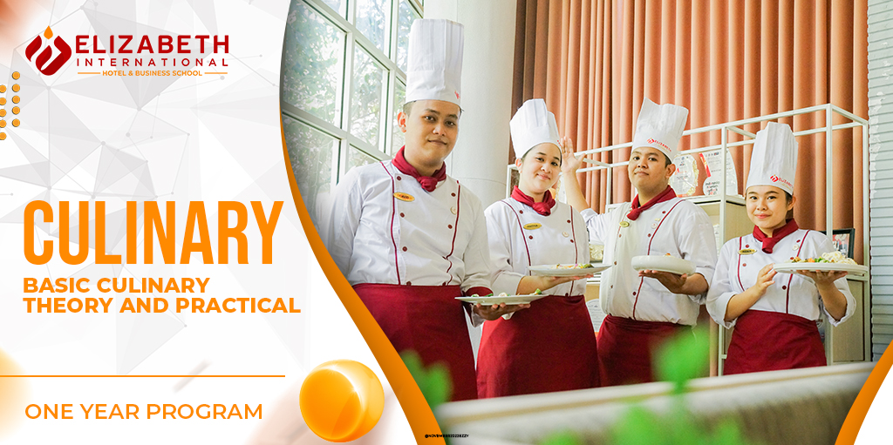
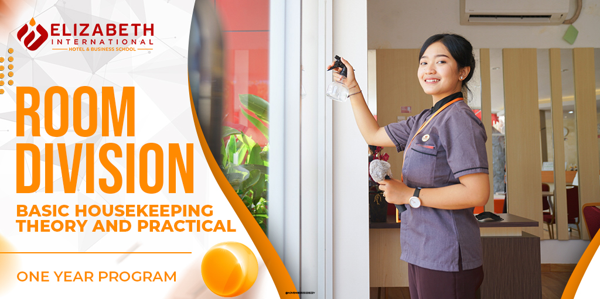
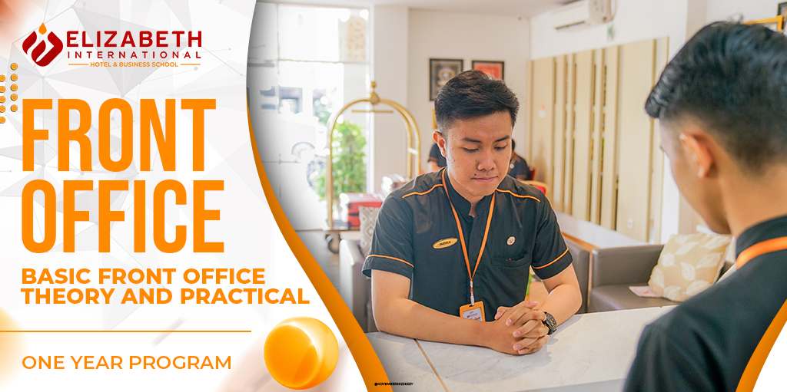
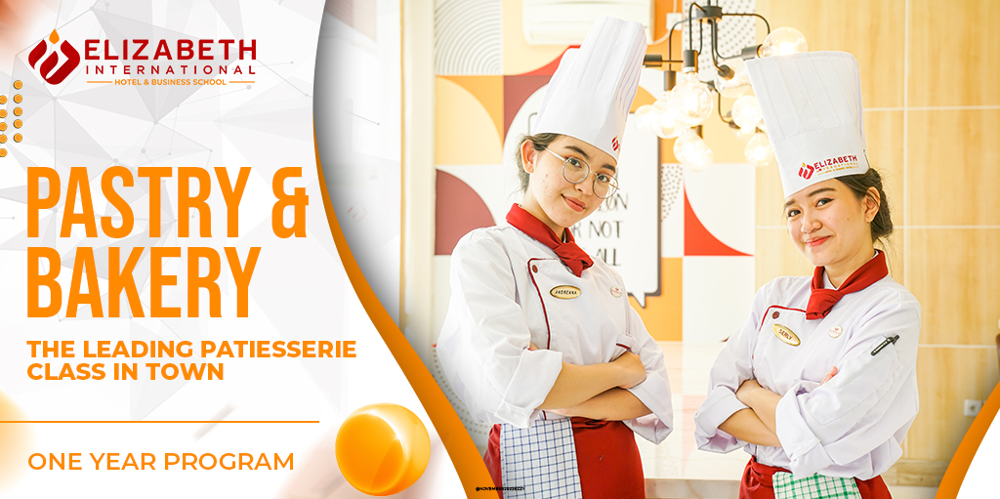

Hospitality and Cruise Line Industry

1. Food and Beverage Service Department

Food and Beverage Service Department merupakan program yang telah terbukti melahirkan lulusan yang kini
telah
berkarir di negara-negara besar seperti Amerika, Eropa, Middle East dan Asia sebagai profesional muda
baik
di darat maupun industry cruise line.
Pada program ini seluruh mahasiswa mahasiswi akan memiliki kemampuan untuk:
- Menangani pelayanan pada sektor restoran dan bar
- Mempersiapkan aneka minuman berbahan dasar alkohol maupun non-alkohol
- Mengenali dan mengetahui jenis-jenis menu serta perkembangannya terhadap dunia industri perhotelan
dan pariwisata
- Memasarkan dan mempresentasikan produk dan jasa kepada pelanggan (customer)
- Mengetahui pengetahuan dan teknik barista dan pengenalan kopi
- Menangani pelayanan wine serta pengetahuan dasar sommelier
- Menggunakan istilah-istilah terkini dari dunia perhotelan, terkait dengan food and beverage service
department
- Menggunakan komputer untuk mengambil dan memproses data terkait dengan bidang pekerjaan.
2. Bar & Mixologi Department

Jurusan Program Jurusan yang diformulasikan taktis untuk menghasilkan Lulusan yang memiliki Keahlian
Multi-Profesi di Dunia Hospitality Food & Beverage. Tren Mixology yang saat ini masih menjadi hal sangat
Segmented atau Khusus, dimana keahliannya hanya dimiliki segelintir Professional dan sudah tentu dicari
banyak Luxury Property & Fine Dining Restaurant & Bar.
Pada program ini seluruh mahasiswa-mahasiswi akan memiliki kemampuan profesi sebagai berikut:
- 🍸 Skill sebagai Bartending & Mixology
- 🎖️Memiliki Skill dengan 100 Classic & International Cocktails Populer Dunia
- 🎖️Memiliki Skill dengan 50 International Mocktails Populer Dunia
- 🎖️Memiliki Skill Pelayan dalam Bar dan Bar Lounge dengan Standard Luxury Hotel
- 🎖️Memiliki Kemampuan dalam Berinteraksi dan Komunikasi kepada Tamu dengan Bahasa Inggris
- 🎖️Memiliki pengetahuan tentang Dunia Minuman mulai dari Coffee, Tea, Beer, Wine hingga
- 🎖️Menangani dan dapat membuat Minuman dengan technique Molecular Gastronomy yang populer dikenal
dengan Mixology
- 🎖️Memiliki skill untuk memproduksi Bahan Dasar Makanan menjadi bahan bahan baku racikan minuman
campuran seperti Syrup dengan bahan dasar Bunga, Akar, Daun, Batang dan Lain-Lain
- 🎖️Memiliki skill untuk memproduksi Bahan Dasar Makanan menjadi bahan bahan baku racikan minuman
campuran seperti Bitter
- 🎖️Memiliki Skill dalam membuat Hiasan Hidangan Minuman dan Garnish dengan tren Mixology terupdate
- ☕ Skill sebagai Barista
- 🎖️Memiliki Skill dalam Mengoperasikan Espresso machine
- 🎖️Memiliki Skill dalam penggunaan Peralatan Manual Coffee Brew yang populer di Dunia
- 🎖️Memiliki Skill untuk Menyajikan 30 Jenis Presentasi Hidangan Minuman Kopi
- 🎖️Memiliki Skill dalam Opening hingga Closedown Procedure Coffee Shop Outlet
- 🎖️Memiliki Skill Dasar dalam mengembangkan Presentasi Hidangan Minuman Kopi Latte dengan Art
- 🍷 Skill sebagai Sommelier
- 🎖️ Memiliki Dasar Pengetahuan tentang Wine Perancis, Italia, Jerman, Asia dan Australia
- 🎖️Memiliki Skill rekomendasi Food Pairing & Guest Preference
- 🎖️Memiliki Skill Pelayanan dan Penyejian Wine dengan Standard International Sommelier
- 🎖️Experience Wine Process di Winery
- 🎖️Memiliki Skill dasar untuk mengindentifikasi Wine
- 🎖️Memiliki Skill dalam Opening hingga Closedown Procedure Sommelier Section & Wine Cellar
- 🍵 Skill sebagai Tea Enthusiast
- 🎖️Memiliki Pengetahuan tentang Dunia Teh
- 🎖️Memiliki Skill dalam menyeduh teh dengan masing-masing metode dan jenis teh
- 🎖️Memiliki Skill untuk memberikan pelayanan teh
- 🎖️Memiliki Skill dalam Opening hingga Closedown Procedure Section Tea
- Skill Lain-Lain
- 🎖️Menangani dan menentukan biaya dasar dalam membuat minuman (Cost Control)
- 🎖️Menguasai dasar-dasar manajemen di dunia hospitality global
- 🎖️Menggunakan komputer untuk mengambil dan memproses data terkait dengan bidang pekerjaan
- 🎖️Memiliki Skill dalam Penangananan Keamanan Pengolahan Makanan & Minuman HACCP
3. Culinary Department

Program yang didesain khusus untuk mencetak cook professional yang siap meniti karir di industri
perhotelan dan kapal pesiar. Mahasiswa mahasiswi akan mendapatkan keahlian fundamental terkait food
preparation, cooking, time management, critical thinking, dan meningkatkan kepercayaan diri untuk
akselerasi karir di dunia kuliner global.
Pada program ini seluruh mahasiswa mahasiswi akan memiliki kemampuan untuk:
- Mempersiapkan dan menyajikan hidangan-hidangan continental
- Mengetahui dan menerapkan Keselamatan, Keamanan dan Kesehatan di lokasi kerja
- Mempersiapkan dan menyajikan produk kue dan roti
- Mengenali dan memahami nutrisi-nutrisi yang terkandung pada makanan serta bahan-bahannya
- Mempresentasikan hasil masakan yang terhidang
- Memasarkan produk dan jasa terkait dengan industri kuliner
- Mengenali, mengetahui dan melaksanakan tipe-tipe plating yang sesuai dengan hidangan
- Menggunakan komputer untuk mengambil dan memproses data terkait dengan bidang pekerjaan
4. Room Division Department

Program keahlian ini memberikan konten yang maksimal di bidang penataan ruangan, public area, front
office secara umum. Pengetahuan dan keahlian yang diberikan mulai dari room maintenance, furniture and
floor recovering, health and safety dan operations of laundry facilities dengan menggunakan teknik
operasional dan praktek housekeeping di hotel berbintang.
Pada program ini seluruh mahasiswa mahasiswi akan memiliki kemampuan untuk:
- Set up ruangan hotel sesuai tipe dan sistem yang berlaku di hotel
- Menjaga kebersihan area publik hotel
- Mengatur prosedur, perlengkapan kegiatan laundry pada industri perhotelan
- Memberikan pelayanan porter/concierge pada pelanggan
- Mengenali dan menggunakan peralatan dan perlengkapan public area cleaner
- Mengetahui dan menggunakan bahasa dan istilah-istilah terkini industri perhotelan terutama divisi
kamar
- Memberikan penjelasan dan memasarkan produk-produk dan jasa pada pelanggan
- Menggunakan komputer untuk mengambil dan memproses data terkait dengan bidang pekerjaan
5. Front Office Department

Program international Front Office di Elizabeth International menjawab kebutuhan akan tenaga kerja di
bidang Front Office yang nantinya siap secara fisik dan mental untuk berkarier tidak hanya di dalam
negeri tetapi mampu berkarier sampai keluar negeri.
6. Pastry & Bakery

Program 1 tahun untuk Pastry & Bakery didesain khusus oleh Elizabeth International untuk mencetak lulusan
yang menguasai keterampilan dan teknik yang baik dalam mengolah kue dan roti ( pastry & bakery )
khususnya di dunia industry hospitality global . Mahasiswa juga akan diberikan pelatihan dan pendidikan
mengenai manajemen , dari mulai tahap perencanaan , pembelian bahan , produksi, design menu sampai
dengan proses pemasaran produk. Mahasiswa akan diberikan panduan tentang perkembangan dunia di bidang
pastry dan bakery .
Lulusan Elizabeth International dalam program Pastry and Bakery dipersiapkan untuk dapat berkarir sebagai
Pastry Chef yang handal ataupun seorang entrepreneur muda di industri global yang tangguh dan kreatif.
Pada program ini seluruh mahasiswa/i akan memiliki kemampuan untuk:
- Menguasai keterampilan dan teknik pengolahan pastry and bakery baik secara tradisional & modern
- Menguasai manajemen perencanaan dan produksi di bidang pastry and bakery
- Menyusun konsep desain menu dan pemasaran produk
- Cost control ( pengendalian biaya )
- Memahami mengenai Kitchen Hygiene & Food Safety
- Menguasai dasar-dasar manajemen di dunia hospitality global.